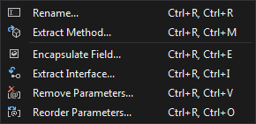
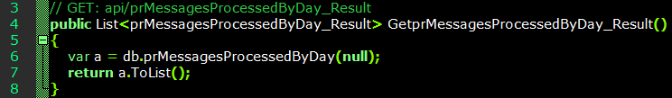
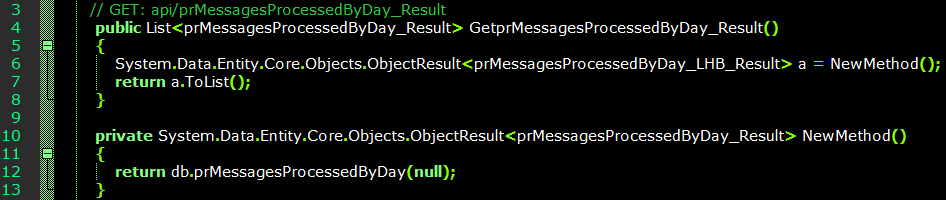

Refactoring Code
This is a term for restructuring code without affecting its behaviour, in order to make source more readable, consistent and maintainable. This can involve the renaming and re-arranging of code.
A number of refactoring options are available in Visual Studio under the 'EDIT' -- 'Refactor' menu options:

Renaming
To intelligently rename an object within the code. This option often appears automatically when renaming a class in Visual Studio anyway, to ensure all instances of that name are updated accordingly.
Field Encapsulation
Instead of accessing fields directly, methods (commonly named 'get' and 'set') are created for reading and writing to the fields. Typically a field is set as private, while the method accessing it is public. Using this technique, a programmer could limit the actions performed on the field.
Method Extraction
Creates a new method based on a selected section of code. Variables are detected and used as the new method's parameters. Commonly used if there's a need to break a larger method into multiple smaller methods for readability or maintainability.


Abstract Class and Interface Conversion, or Extract Interface
Creates a new source file containing interface, populated with selected public members. This is useful if multiple classes have a set of members in common.
Remove Parameters
Remove parameter from method and its declaration.
Reorder Parameters
ReSharper
Third-party refactoring tool released by JetBrains. Can be installed in Visual Studio under 'Extensions and Updates'.
References
JETBRAINS. 2017.
ReSharper: Visual Studio Extension for .NET Developers. [WWW].
www.jetbrains.com/resharper/. April 2017.
LOWY, JUVAL. 2004. Code Magazine. Issue 2004: January/February.
C#2.0 Code Refactoring. [WWW].
http://www.codemag.com/Article/0401071. April 2017.
MICROSOFT. 2015. Developer Network.
Refactoring (C#). [WWW].
https://msdn.microsoft.com/en-us/library/719exd8s.aspx. April 2017.